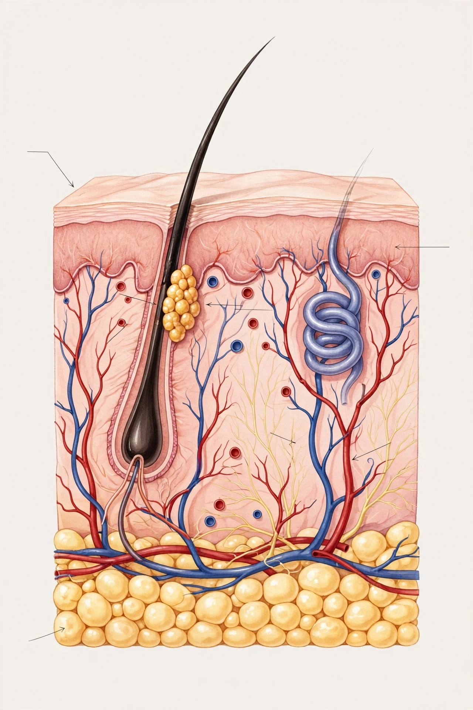

Epidermis

| System | Integumentary |
|---|---|
| Tissue type | Stratified squamous epithelium |
| Main cell type | Keratinocytes |
| Thickness | 0.05–1.5 mm |
| Layers | Stratum basale, spinosum, granulosum, lucidum (thick skin), corneum |
The epidermis is the outermost of the three layers of the skin, above the dermis and hypodermis. It is a waterproof, protective barrier against infection, ultraviolet radiation and water loss, and it contains no blood vessels, being nourished by diffusion from the dermis beneath.
Structure
The epidermis is composed mainly of keratinocytes, which are born in the deepest layer, the stratum basale (stratum germinativum), and move outward as they differentiate, flatten and fill with the protein keratin. In most skin the layers, from deep to superficial, are the stratum basale, stratum spinosum, stratum granulosum and stratum corneum; in the thick skin of the palms and soles an additional translucent stratum lucidum is present. The journey of a keratinocyte from base to surface takes about four weeks, after which dead corneocytes are shed.
Cells and functions
Besides keratinocytes, the epidermis contains melanocytes, which produce the pigment melanin that determines skin colour and protects against UV damage; Langerhans cells, antigen-presenting immune cells; and Merkel cells, associated with touch sensation. The epidermis also synthesises vitamin D in response to sunlight. Disorders of the epidermis include eczema, psoriasis, and the skin cancers basal cell carcinoma and squamous cell carcinoma; melanoma arises from melanocytes.